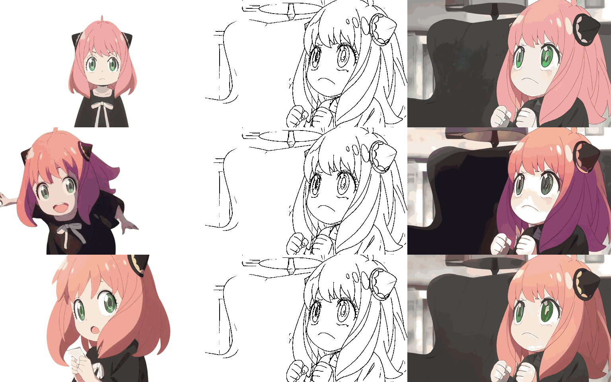

Hao Ouyang
(欧阳豪)
Research Scientist @ Ant Group
I am a passionate researcher specializing in Generative AI. Currently, I work as a research scientist at Ant Group.
I completed my PhD at HKUST under the inspiring supervision of Prof. Qifeng Chen and had the honor of collaborating with Prof. Jiaya Jia on my final-year project during my Bachelor's at CUHK. My journey has also taken me through internships at Google Research, Microsoft Research Asia, Ant Research, Tencent, and Sensetime.
I welcome opportunities for collaboration—please feel free to reach out.
Selected Publications
View Others →MagicQuill: An Intelligent Interactive Image Editing System
CVPR 2025


MangaNinja: Line Art Colorization with Precise Reference Following
CVPR 2025 Highlight
Dynamic Typography: Bringing Text to Life via Video Diffusion Prior
ICCV 2025 Best Paper Candidate
LeviTor: 3D Trajectory Oriented Image-to-Video Synthesis
CVPR 2025 Highlight

CoDeF: Content Deformation Fields for Temporally Consistent Video Processing
CVPR 2024 Highlight
Experience
Research Scientist
Ant Group
Current
Research Intern
Google Research
Research Intern
Microsoft Research Asia (MSRA)
Research Intern
Ant Research
Research Intern
Tencent
Research Intern
Sensetime